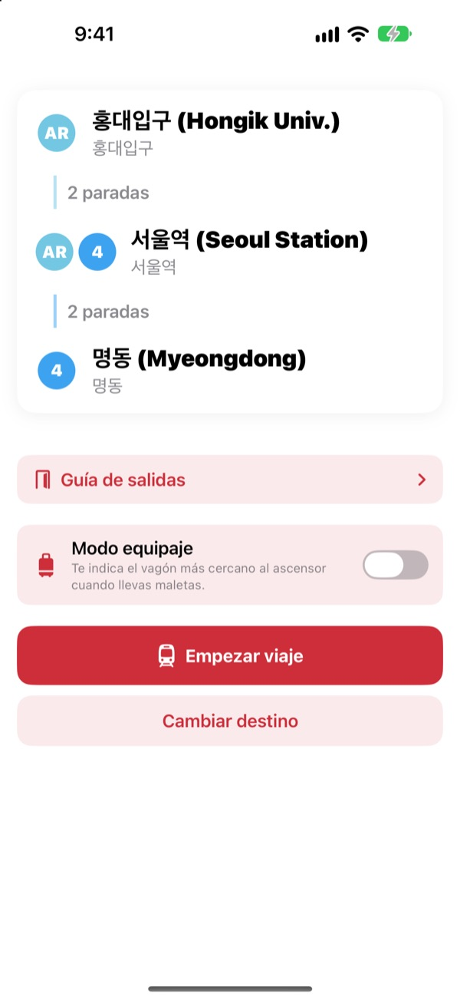
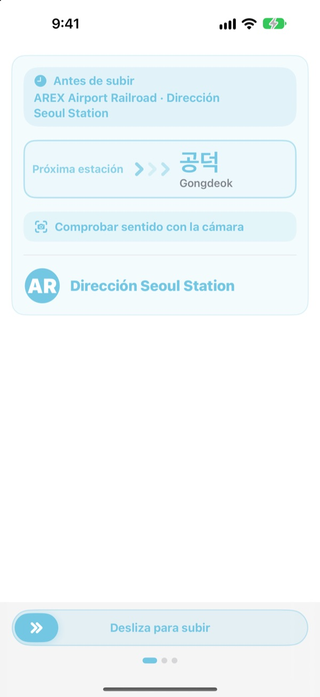
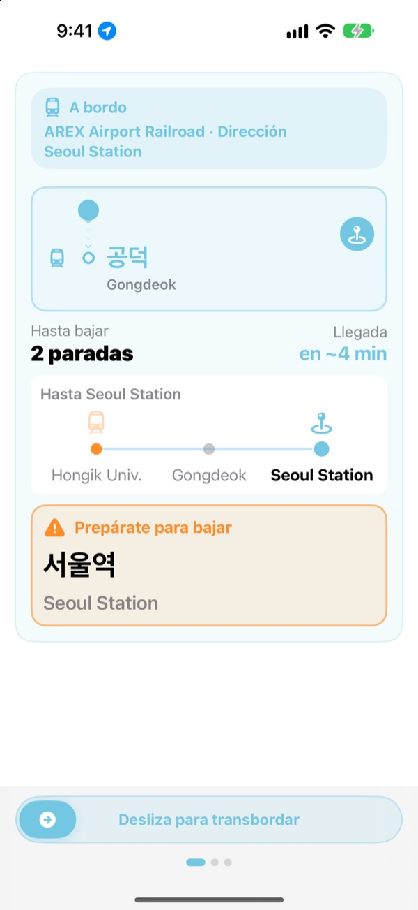
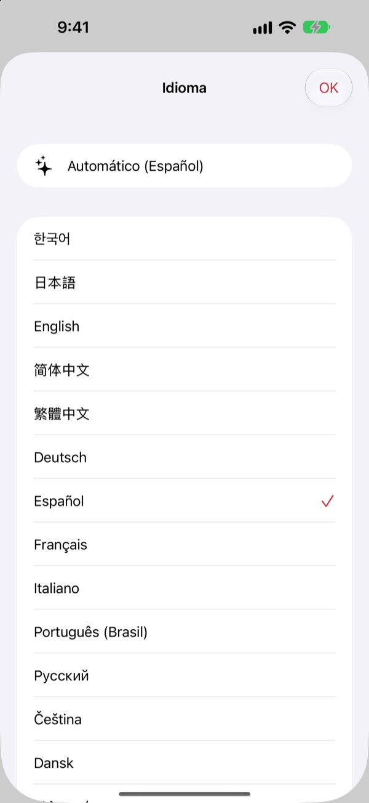

El andén correcto.
La parada correcta.
Elige origen y destino y KORA te dice qué tren tomar, tal como aparece en el letrero del andén. Durante el viaje sigue tu estación y te avisa cuándo bajar.
La búsqueda de rutas, el sentido del tren y las llegadas en tiempo real son gratis.

Haz un viaje de prueba
Estás en Hongik Univ., en la línea AREX. Elige dónde bajar y toca Empezar viaje para ver el sentido del tren y los avisos de bajada, como en la app.
¿Alguna vez dudaste en el andén sin saber qué tren tomar?
Las apps de mapas te dicen la línea, pero en el andén solo hay letreros con nombres de estaciones que nunca has oído. Si subes en el sentido contrario, te toca volver varias paradas. Si no oyes el anuncio, te pasas de estación. KORA nombra tu tren igual que el letrero y te avisa antes de tu parada.
Tal como dice el letrero
El tren que debes tomar aparece tal cual se lee su destino en el andén y en el propio tren. ¿Sigues con dudas? Apunta la cámara al letrero del andén o al de destino del tren y KORA te dice al instante si vas en el sentido correcto.
El reconocimiento de texto se hace por completo en tu iPhone.

No te pasarás de parada
KORA combina llegadas en tiempo real, GPS, las salidas y paradas del tren y los anuncios a bordo para saber dónde estás. Al acercarte a tu parada recibes “Prepárate para bajar” y luego “¡Baja ahora!”, con vibración.
También ves el progreso en la pantalla bloqueada y en la Dynamic Island.

23 idiomas, con el nombre coreano
Usa toda la app en 23 idiomas; empieza en el idioma de tu iPhone. Los nombres de las estaciones muestran el original en coreano junto a la grafía latina de los letreros, para que los reconozcas en el andén.

Empieza en tres pasos
- 1
Fija el origen
El GPS encuentra la estación más cercana, o elígela tú.
- 2
Elige el destino
Los transbordos, las paradas y el tren aparecen al momento.
- 3
Toca Empezar viaje
La pantalla y una vibración te avisan cuándo bajar.
Para qué sirve cada permiso
- Ubicación
- Encontrar la estación más cercana
- Cámara
- Leer letreros del andén y de destino para comprobar el sentido
- Micrófono y reconocimiento de voz
- Entender en los anuncios del tren el nombre de la estación y el lado de las puertas
- Movimiento y forma física
- Detectar salidas y paradas para acertar mejor la estación actual
Todos los permisos son opcionales. Sin ellos puedes elegir las estaciones tú mismo y seguir teniendo la ruta y los avisos de bajada. La ubicación, la cámara y los anuncios se procesan en tu dispositivo y nunca se graban, guardan ni envían.
Encontrar la ruta siempre es gratis. La guía a bordo es KORA Pro.
Gratis
- Búsqueda de rutas y transbordos
- El letrero de destino del tren que debes tomar
- Llegadas en tiempo real
- Comprobación del sentido con la cámara
- Estación actual y aviso de bajada en pantalla
- Todas las funciones Pro en tus tres primeros trayectos
KORA Pro
- En cada trayecto: guía en la pantalla bloqueada, reconocimiento de anuncios y vibración al bajar
- Guía de salidas: qué hay en cada salida de las líneas 1 a 8 de Seúl
- Aviso del último tren en las líneas 1 a 9
- Modo equipaje: el vagón más cercano al ascensor en las líneas 1 a 8
Pagas una vez y es tuyo. No es una suscripción.
Cuando se acaban los trayectos gratis puedes seguir viajando. El progreso en pantalla se mantiene; solo se pausan la pantalla bloqueada, el reconocimiento de anuncios y la vibración.
Preguntas frecuentes
La app no encuentra mi estación o muestra otra.
Ve a Ajustes > Privacidad y seguridad > Localización > KORA, elige “Cuando se use la app” y activa “Ubicación exacta”. Bajo tierra o dentro de edificios grandes el GPS puede fallar; toca la tarjeta de la estación actual arriba y elígela tú. Todo funciona también sin acceso a la ubicación.
¿Cómo uso la comprobación con la cámara?
Con la ruta en pantalla, abre la comprobación con la cámara y encuadra el letrero del andén o el de destino del tren. Funciona mejor con el texto en coreano. Si el letrero está oscuro, lejos o muy inclinado, acércate y apunta de frente. Tómalo como una ayuda y, si dudas, mira también los letreros de la estación.
No aparecen las llegadas en tiempo real.
Los datos vienen del Seoul Open Data Plaza, necesitan conexión y están disponibles sobre todo en las líneas del área metropolitana de Seúl. Sin conexión o sin datos en tiempo real, KORA pasa automáticamente a una estimación basada en horarios, GPS y acelerómetro, y sigue guiándote. La búsqueda de rutas funciona sin internet.
El aviso de bajada llegó un poco antes o después.
Bajo tierra el GPS es débil y la estación actual puede ir con retraso. Si permites el micrófono, KORA corrige la posición con los anuncios del tren. Los avisos son una ayuda: presta atención también a los anuncios y a los letreros.
¿Cómo cambio el idioma?
KORA empieza en el idioma de tu iPhone. Mantén pulsada una tarjeta de estación en la pantalla principal (la actual o el destino) para abrir el selector y elegir entre 23 idiomas.
La actividad en vivo no aparece en la pantalla bloqueada.
Comprueba en Ajustes > Apps > KORA (en iOS anteriores, Ajustes > KORA) que las actividades en vivo están activadas. Aparece al empezar la guía del trayecto y termina si cierras la app por completo. La Dynamic Island solo aparece en los modelos de iPhone que la tienen.
¿Qué ciudades incluye?
Unas 930 estaciones del área metropolitana de Seúl (Seúl, Gyeonggi e Incheon, con GTX-A, AREX, la línea Shinbundang y los trenes ligeros), Busan, Daegu, Gwangju y Daejeon. Cambia de ciudad con las etiquetas de región arriba en el selector de estaciones.
¿Puedo probarla antes del viaje?
Sí. Elige tú el origen y el destino y podrás ver rutas, transbordos y el sentido del tren desde cualquier lugar del mundo.
¿KORA Pro es una suscripción?
No. Es una compra única que conservas, y funciona con En familia. Si reinstalas la app, toca Restaurar compra en la pantalla de Pro.
¿Qué pasa con mis datos?
No hay cuenta ni anuncios. La ubicación, la cámara y el reconocimiento de anuncios se procesan en tu dispositivo y nunca se guardan ni se envían. Solo recopilamos estadísticas de uso anónimas para mejorar la app.
¿Es accesible?
KORA es compatible con VoiceOver y con tamaños de texto grandes. Las sugerencias para mejorar la accesibilidad siempre son bienvenidas.
¿Falta una estación, hay un nombre raro o tienes otra duda? Escríbenos a mizzking75@gmail.com. Si incluyes la versión de la app, tu modelo de iPhone y las estaciones que usaste, lo revisaremos antes.